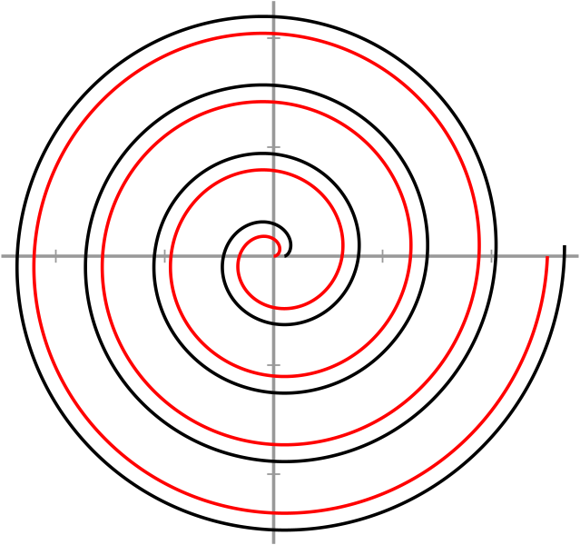

CALLIOPE-TS
SOURCES
Prosodic Linguistics, Generative Metrics, Phonosyntax & OT/MaxEnt
＋
Add Resource
📥 Import / Sync
💾 Backup Library
🌓 Theme
All Sources
0
⭐ Finished / Read
0
Prosody & Metrics
0
Phonology, Syntax & OT
0
Semantics & Pragmatics
0
Phonetics & Lab Phonology
0
Morphology & Morphosyntax
0
Computational & AI
0
Lexicons & Corpora
0
Cumulative Bibliography
👤 All Researchers
📂 All Subfields / Focus Areas
📅 Year: Newest First
📅 Year: Oldest First
🔤 Author: A → Z
📖 Title: A → Z
Showing 0 papers
Show Read Only (⭐)
Reset Filters
Expand All Abstracts
Cumulative Scholarly Bibliography (ACL Convention)
＋ Add New Resource
×
⚡ Auto-Populate Metadata via Online APIs (OpenAlex / Crossref / ACL)
⚡
Fetch Metadata
Enter a DOI or title and click 'Fetch Metadata' to auto-populate all categories.
Title *
Author(s) *
Year *
Category *
Prosody & Metrics
Phonology, Syntax & OT/MaxEnt
Semantics & Pragmatics
Phonetics & Lab Phonology
Morphology & Morphosyntax
Computational & AI
Lexicons & Corpora
Subfield / Focus Area
Researcher Archive (Optional)
Venue / Journal / Publisher
DOI / URL
Local Relative File Path / Link
Abstract
Cancel
Save Resource
Notification